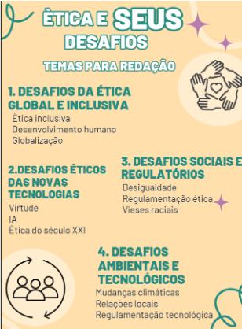

Temas para redação do enem
ÉTICA E CIDADANIA

Ética no Mundo Contemporâneo: Desafios e Perspectivas para uma Sociedade em Transformação
A ética enfrenta questões cada vez mais desafiadoras devido às constantes transformações na tecnologia, cultura e sociedade. Esse cenário pede novas perspectivas e ajustes para assegurar equidade e harmonia no mundo de hoje.
TIPOS DE ARGUMENTOS:
1.Argumento de Autoridade:
Habermas e Nussbaum defendem uma ética dialógica e inclusiva no mundo globalizado. Habermas enfatiza o diálogo entre culturas, enquanto Nussbaum propõe uma ética baseada no desenvolvimento humano. Ambos concordam que a ética deve ser pluralista e adaptável às complexidades da sociedade atual.
2.Argumento Histórico:
A ética evoluiu ao longo do tempo para enfrentar novos desafios. Aristóteles destacou a busca da virtude, Kant introduziu a moral baseada no dever e, hoje, questões como inteligência artificial e mudanças climáticas exigem novas abordagens éticas para o século XXI.
3.Argumento por Exemplificação:
Algoritmos de inteligência artificial em tribunais nos EUA reforçaram vieses raciais e sociais, resultando em decisões injustas. Esse exemplo mostra a necessidade de regulamentação ética para garantir que as tecnologias promovem justiça, em vez de perpetuar desigualdades.
4.Argumento por Comparação:
A ética tradicional focava relações interpessoais e comunidades locais, enquanto a atual enfrenta desafios globais, como mudanças climáticas e desigualdade econômica. A ética ambiental exige responsabilidade coletiva, diferente da ética individualista dos séculos passados.
5.Argumento por Raciocínio Lógico:
Se a dignidade humana é um valor universal, todas as pessoas devem ter direitos e oportunidades iguais. No entanto, a globalização e a tecnologia ampliaram desigualdades, exigindo uma ética que garanta inclusão e justiça social em escala global.
6.Argumento por Causa e Consequência:
A falta de ética na tecnologia pode gerar perda de privacidade e manipulação de dados. O caso Cambridge Analytica mostrou como dados foram usados para influenciar eleições, destacando a necessidade de regulamentação ética no setor tecnológico.